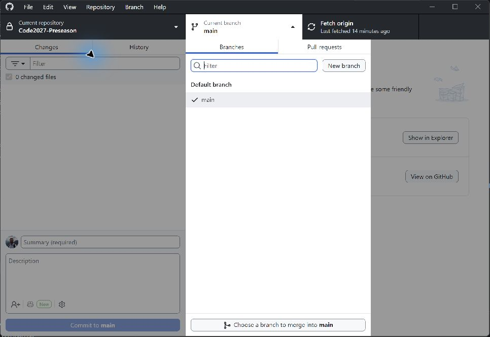
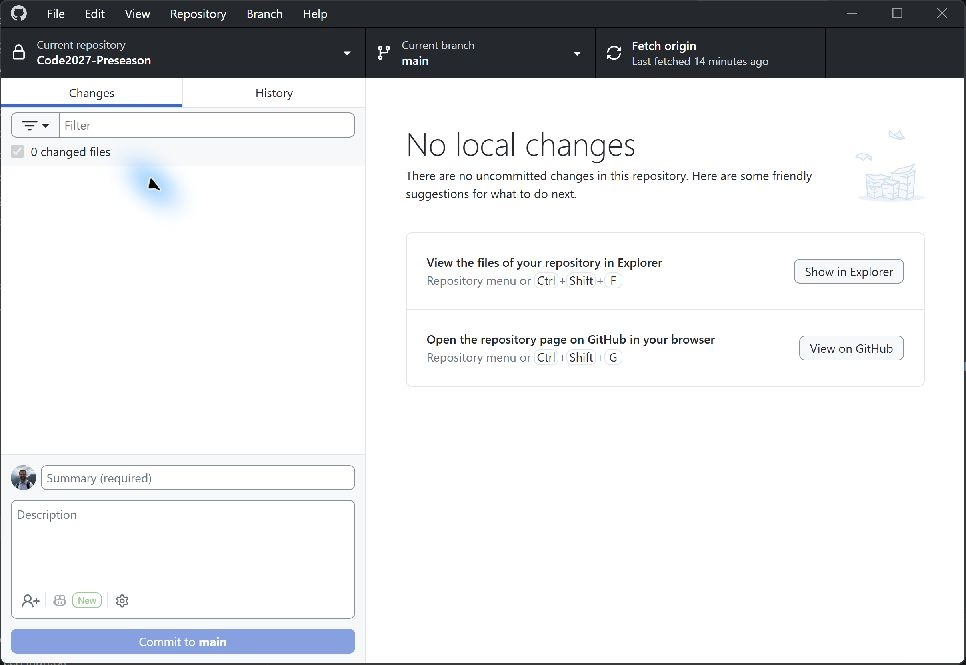
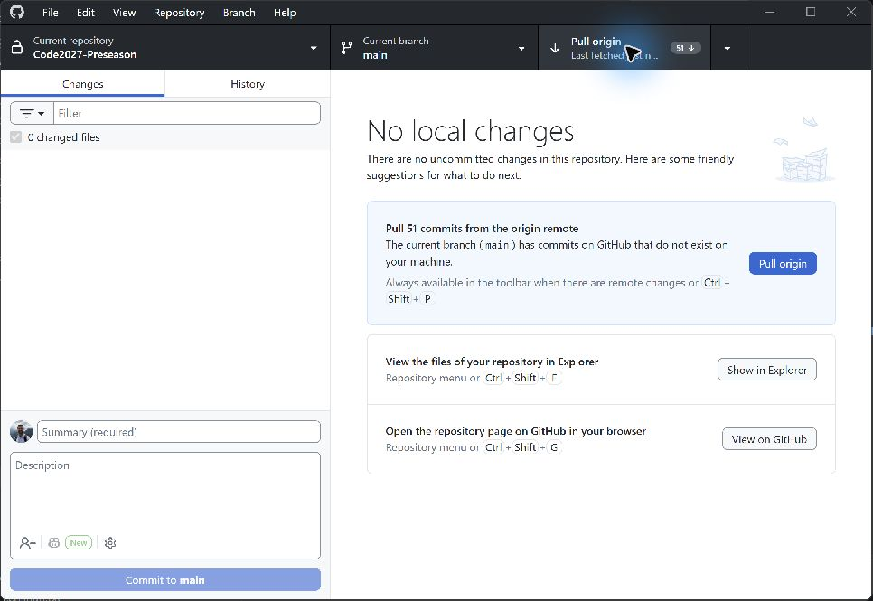
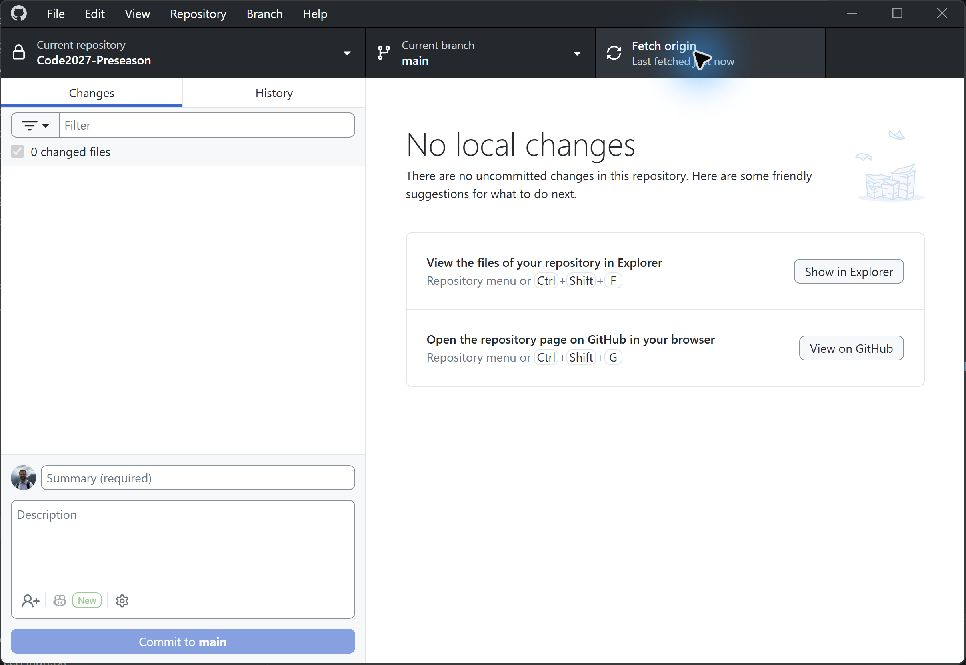
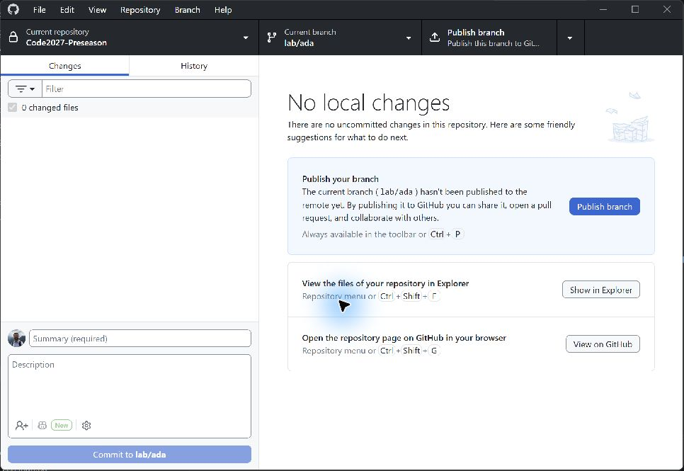

Setup
Get the saved starting code and make your own branch.
Download the lesson code and create a branch
Open the project
Open WPILib 2027 VS Code. Click File → Open Folder, select the folder named Code2027-Preseason, and click Select Folder. Remember to open the top-level folder.
Look at the file list on the left. You should see src and build.gradle inside Code2027-Preseason. This tells you the whole project is open.

Get the project history
This lesson starts from walkthrough-01-start. This is a tag: a name attached to a saved version of the project. It preserves the code Mr. Leibs prepared for this lesson, even as we add more code to main.
Keep this published walkthrough open in your browser while you work. The copy of the instructions inside the tagged project is older.
Open GitHub Desktop. At the top left, click Current Repository and select Code2027-Preseason. A repository is the project and its saved history.
Click Current Branch near the top of the window. In the list, click main. A branch is a named version of the project. We will use main to download the project history, then find this lesson’s tagged starting point.

Check that Current Branch now says main. Click Fetch origin to check GitHub for new changes. Wait for the check to finish.

If the button changes to Pull origin, click it. This downloads the new code into your project. Wait for it to finish. This brings your project history up to date. The current code on main may already contain the completed lesson; we will select the saved starting code next.

When the download finishes, the button returns to Fetch origin. If it already says Fetch origin after checking for updates, your copy is up to date.

Make your own branch
A commit is one saved version of the project. We will create your branch from the commit marked with our lesson’s tag:
- In GitHub Desktop, click History, next to Changes above the list on the left.
- Scroll through the history to find Add walkthrough screenshots with clear two-cycle control traces. Click it. Its details should show the tag
walkthrough-01-startand commit ID beginningf6fac3d. You can also view the tagged version on GitHub to confirm the starting point. - Right-click that commit in the history list and choose Create Branch from Commit.
- Type
lab/followed by your name, for examplelab/ada, then click Create Branch. If you already used that name for another exercise, choose a new one such aslab/ada-subsystem.
Check your starting code. Return to VS Code and open src/main/java/first/robot/subsystems/Arm.java or Elevator.java. You should see the numbered TODO comments. If the file already contains the completed controller code, go back to GitHub Desktop and create a new branch from the tagged commit above.
Check that Current Branch shows your branch name. Your edits will now belong to that branch. Next, choose a mechanism and explore how its motor makes it move.
